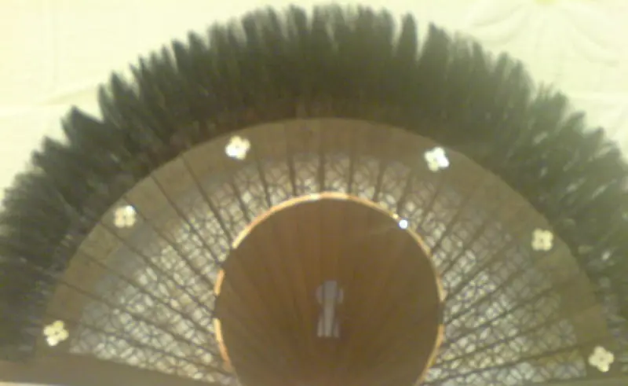
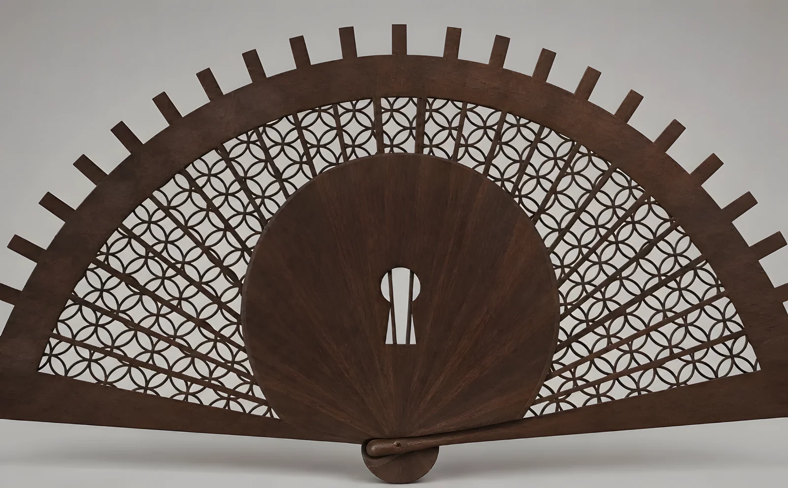
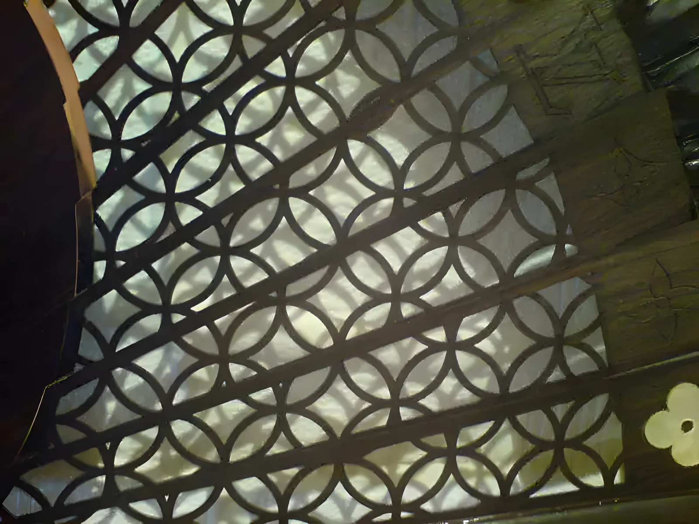
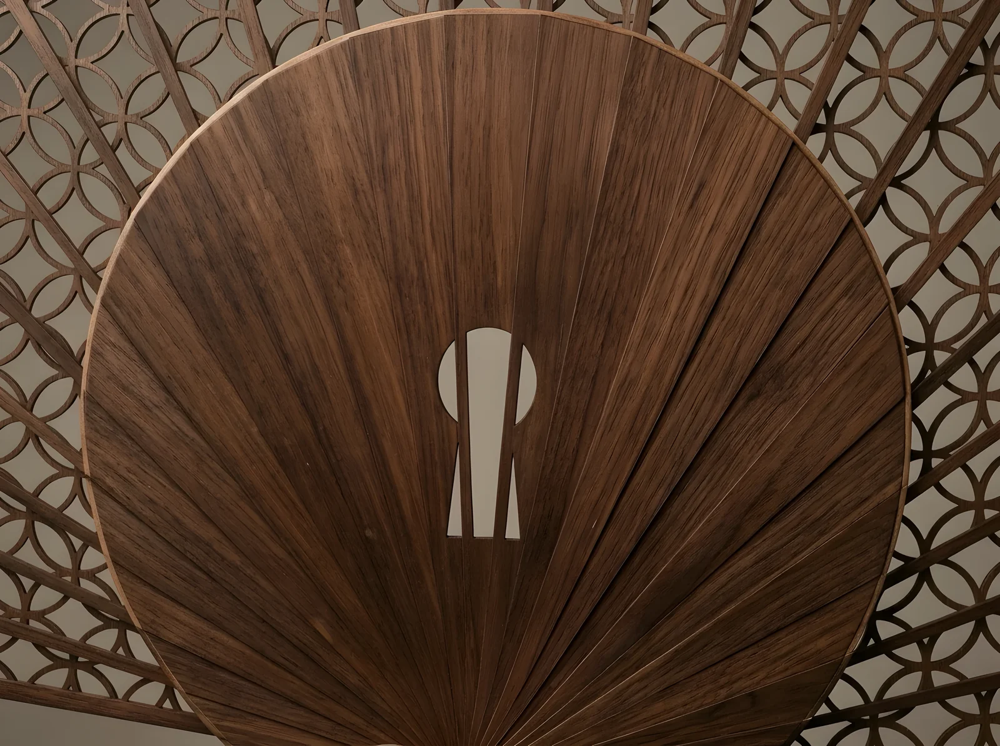
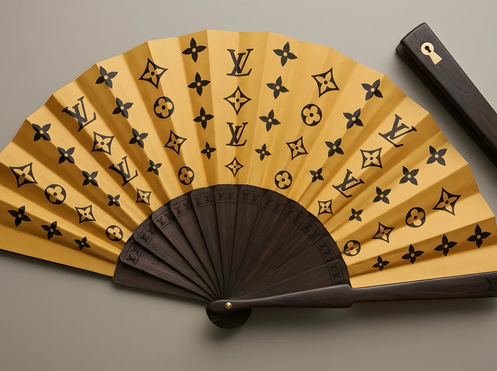
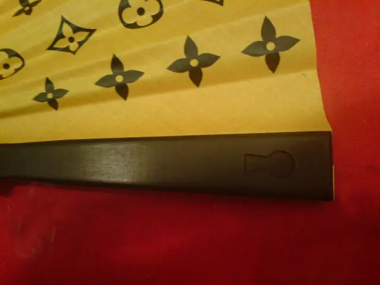

Inicio / Trabajos / Abanico Louis Vuitton
Madera · corte y grabado
Pieza única para una subasta benéfica: calamos el interior de cada varilla y marcamos los logotipos sin astillar la madera.
Calamos los círculos interiores de las varillas y la cerradura central sin astillar la madera, y marcamos los logotipos con precisión en varillas y caberas.
Qué pidió el cliente, qué era lo difícil de la pieza y cómo se resolvió, contado por quien la hizo. preguntar al dueño
Dos o tres frases del taller sobre esta madera, este grosor o este tipo de calado, que sirvan a quien quiera encargar algo parecido. preguntar al dueño





¿Te sirve de referencia?
El mensaje sale ya escrito con este trabajo como referencia. Solo tienes que decirnos el material y cuántas unidades.
Escríbenos por WhatsApp ↗Abanico Louis Vuitton · madera calada y marcada
Pedir algo parecido →